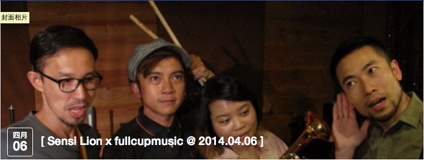
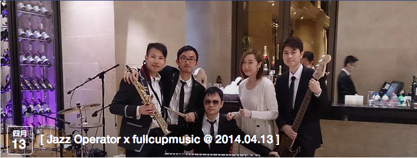
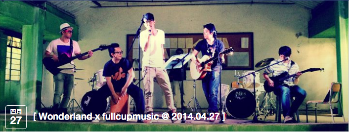

|
- APRIL -
|
|  |
***本音樂會的門票由2014年2月25日中午12時 開始接受預訂。如要預訂門票，請跟隨下文提及的方法進行 訂票。在活動中按「參加」的人，將不會獲得預留門票。不 便之處，敬請見諒。 |
|  |
***本音樂會的門票由2014年3月19日中午12時 開始接受預訂。如要預訂門票，請跟隨下文提及的方法進行 訂票。在活動中按「參加」的人，將不會獲得預留門票。不 便之處，敬請見諒。 |
|  |
***本音樂會的門票由2014年3月19日中午12時 開始接受預訂。如要預訂門票，請跟隨下文提及的方法進行 訂票。在活動中按「參加」的人，將不會獲得預留門票。不 便之處，敬請見諒。 |